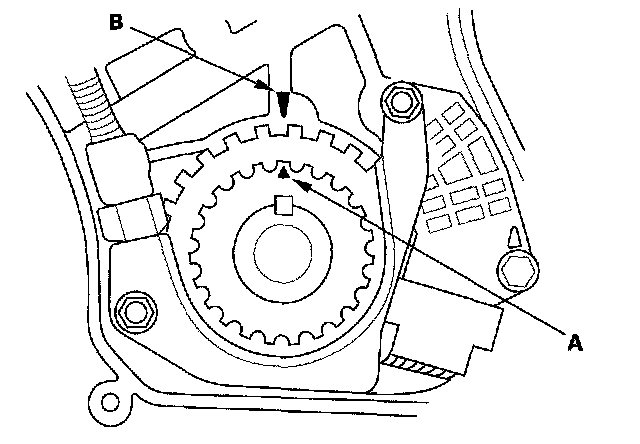
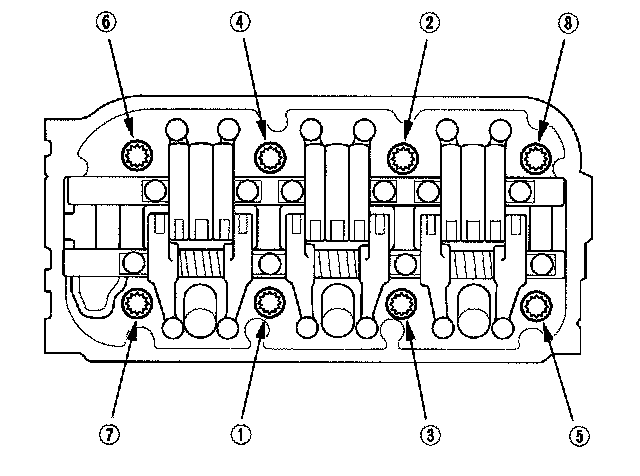

Cylinder Head Installation
Cylinder Head Installation1. Clean the cylinder head and engine block surface.
2. Clean and install the oil control orifices (A) with new O-rings (B).
3. Install the dowel pins (C) and new cylinder head gaskets (D).
4. Clean the timing belt pulleys, timing belt guide plate, and the upper and lower covers.
5. Set the timing belt drive pulley to top dead center (TDC) by aligning the TDC mark (A) on the tooth of the timing belt drive pulley with the pointer (B) on the oil pump.

6. Set the camshaft pulleys to TDC by aligning the TDC marks (A) on the camshaft pulleys with the pointers (B) on the back covers.
7. Put the cylinder head onto the engine block.
8. Measure the diameter of each cylinder head bolt at point A and point B.

9. If either diameter is less than 11.3 mm (0.44 in.), replace the cylinder head bolt.
10. Apply new engine oil to the threads and under the bolt heads of all cylinder head bolts.
11. Tighten the cylinder head bolts in sequence to 30 N-m (3.0 kgf-m, 22 lbf-ft). Use a beam-type torque wrench. When using a preset-type torque wrench, be sure to tighten slowly and do not overtighten. If a bolt makes any noise while you are torquing it, loosen the bolt and retighten it from the first step.

12. After torquing, tighten all cylinder head bolts in two steps (90° per step). If you are using a new cylinder head bolt, tighten the bolt an extra 90°.
NOTE: Remove the cylinder head bolt if you tightened it beyond the specified angle, and go back to step 8 of the procedure. Do not loosen it back to the specified angle.
13. Install the timing belt.
14. Adjust the valve clearance.
15. Install the cylinder head covers.
16. Install the water passage.
17. Install the front warm up three-way catalytic converter (front WU-TWC and rear warm up three-way catalytic converter (rear WU-TWC).
18. Install the fuel rails.
19. Install the connector bracket to the front cylinder head.
20. Install the bracket to the rear cylinder head.
21. Install the purge joint.
22. Connect the fuel feed hose (A), then install the quick-connect fitting cover (B).

23. Connect the engine wire harness connectors, and install the wire harness clamps to the cylinder head.
^ Six injector connectors
^ Engine coolant temperature (ECT) sensor 1 connector
^ Crankshaft position (CKP) sensor connector
^ Exhaust gas recirculation (EGR) valve connector
^ Rocker arm oil control solenoid connector
^ Rocker arm oil pressure switch connector
^ Oil pressure switch connector
^ Two air fuel ratio (A/F) sensor connectors
^ Two secondary heated oxygen sensor (secondary H02S) connectors
24. Install the upper radiator hose (A) and lower radiator hose (B).
25. Install the intake manifold.
26. Install the alternator.
27. Install the power steering (P/S) pump (A) and P/S hose bracket (B).
28. Install the drive belt.
29. Clean the battery posts and cable terminals then connect them to the battery. Apply grease to the battery terminals to prevent corrosion.
30. After installation, check that all tubes, hoses and connectors are installed correctly.
31. Check for fuel leaks. Turn the ignition switch ON (II) (do not operate the starter) so the fuel pump runs for about 2 seconds and pressurizes the fuel line. Repeat this operation two or three times, then check for fuel leaks at any point in the fuel line.
32. Refill the radiator with engine coolant, and bleed air from the cooling system with the heater valve open.
33. Do the crankshaft position (CKP) pattern clear/CKP pattern learn procedure.
34. Inspect the idle speed.
35. Inspect the ignition timing.
36. Do the steering column position memorization.
37. Enter the anti-theft codes for the audio system and navigation system (if equipped).
38. Set the clock.